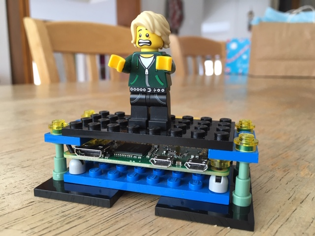

Choosing Your Machines
These playbooks assume that you will be setting up two machines. Typically, the mail and web server is in the cloud while backups are run by a machine that you physically control (old PC in a corner). I have run the setup with a $5/mo cloud machine and a Raspberry Pi Zero on a shelf.
Mail and Web Server
A mail and web server needs a public IP address with connectivity to all ports. Residential ISP connections have a semi-dynamic IP address and typically block incoming connections to port 25, so they are useless for running a public mail server.
There are two ways to get this: Use your own hardware with a business class ISP connection, or use someone else's hardware provided as a Virtual Private Server (VPS) in the cloud. It doesn't matter which you do for the purposes of these playbooks.
There are many VPS providers. In the USA, Linode (founded 2003), Amazon EC2 (launched 2006), Microsoft Azure (launched 2010), or DigitalOcean (founded 2011) are all solid choices. Linode and DigitalOcean have similar pricing with $5/10/20/etc. packages that include CPU, memory, disk, and network bandwidth. Amazon and Microsoft charge for everything separately with different rate classes (on-demand vs reserved) and you assemble your own.
For the simple mail host and static web site that these scripts set up, a small (1GB nanode, t3.micro, Av2 A1, 1GB droplet) host is fine. You might need something bigger if you add other services, or a database-heavy dynamic website like Wordpress. The providers usually let you migrate to a larger instance later on.
I prefer Linode because they have a long history, a solid focus, well managed network, and keep things simple. If you choose them, it would be nice if you signed up using my referral code (they give me few bucks off my bill if you stick around for three months).
In any case, once you allocate a machine, make sure that the IP address is not on any of the spam blacklists. That would be the internet equivalent of like getting a telephone number that used to belong to a deadbeat. Some cloud providers have had more problems than others in keeping their networks clean. Many sites like https://www.dnsbl.info can check dozens of lists at once.
Backup Server
The backup machine should be something under your physical control, usually an old machine in your basement. It connects to other machines to fetch backups and send outgoing status mail. Nothing on the internet needs to find it, so it can live happily behind a residential ISP connection.
Literally anything that runs Linux will work fine, even a Raspberry Pi Zero. Just make sure it has some disk space for the backup data. For just personal email and some system files, even a good-sized USB key is probably sufficient.
The playbooks assume that you are using a fresh machine. If you
use a NAS that is already running other things,
the bacula-director role should be fairly self-contained,
but the common and mailnull roles might
interfere with existing things on the machine.

Backup Server with Disaster Man
(Still beats any machine in the first twenty years of my career)